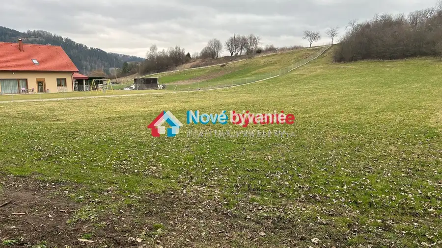
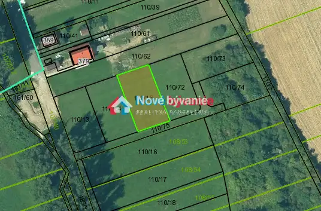

Pozemok v obci Vlachy č.3 N016-14-STKE
Vlachy


- Plocha968 m²
- VlastníctvoOsobné
O nehnuteľnosti
REZERVOVANÉ!!! ID: N016-14-STKE Posledný pozemok v ponuke!!! Ponúkame Vám na predaj stavebný, mierne svahovitý pozemok s pekným výhľadom v obci Vlachy na Liptove. Tento pozemok s rozlohou 866m2 s rozmerom cca 22 x 39 metrov a podielom 1/6 na prístupovej ceste o rozlohe 612m2 (spolu 968m2), máte teraz možnosť získať za jedinčenú cenu. Pozemok ponúka možnosť vystavať si domov s výhľadom do prírody. Je ideálny pre tých, ktorí hľadajú kombináciu prírodného prostredia a moderného bývania. Pozemok je situovaný v tichej a pokojnej lokalite obce s dostupnými inžinierskymi sieťami elektrina a voda, ktoré sú aktuálne vo fáze prípravy realizácie.Okolie je vhodné na turistiku a relaxáciu, pričom v blízkosti nájdete občiansku vybavenosť a služby pre pohodlný každodenný život. Tento pozemok, obklopený prírodnými krásami ako sú Liptovská Mara, Vysoké a Nízke Tatry, ktoré len podčiarkujú jeho exkluzívnosť, môže byť Váš za priaznivú cenu.Cena tejto nehnuteľnosti je cca. 65€/m2 čo je spolu 62.900 € vrátane poplatkov súvisiacich s predajom a prevodom nehnuteľnosti.Nezmeškajte túto príležitosť a kontaktujte nás pre viac informácií a obhliadku na tel. č. 0948 881 639, email: klucka@novebyvaniereality.sk
Parametre
- Druh
- Pozemok pre rodinné domy
- Dátum zverejnenia
- 03. 09. 2025
- Elektrina
- Na pozemku, Na pozemku - 230 V, Na pozemku - 400 V
- Plocha pozemku
- 968 m²
- Typ
- Predaj
- Vlastníctvo
- Osobné
- Voda
- Na pozemku - Diaľkový vodovod, Pri pozemku - Verejný vodovod